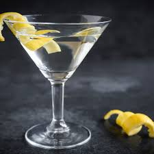

Chapter 1
« Martini, shaken, not stirred », comme disait James Bond. Ce cocktail aurait été inventé après l’importation du vermouth italien Martini aux États-Unis. Un barman l’aurait alors mélangé à du gin, créant ainsi le cocktail le plus connu du monde.
Cocktail classique
Chapter 2
La margarita est un cocktail rafraichissant à base de tequila inventée en 1948 par Margaret Sames, d’où le nom (Margarita est la traduction en espagnol du prénom Margaret). Fait intéressant : la margarita est le cocktail le plus commandé en Amérique du Nord.
Chapter 3
Traditionnellement appelé planteur dans les Antilles françaises, est un cocktail contenant la plupart du temps des fruits en morceaux et le jus de ces fruits. La recette connait plusieurs variantes, alcoolisées ou non